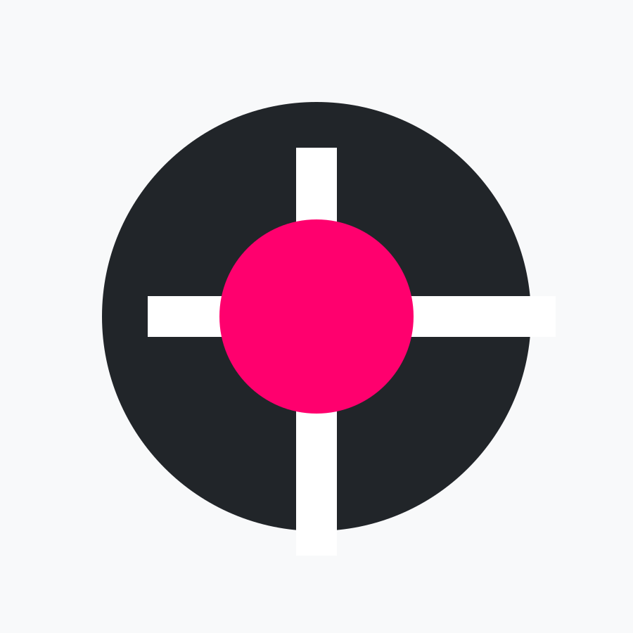

Afterimage
A campaign concept combining typography, image sequencing, and motion-led announcements.
Replace this placeholder with project context, your role, production notes, and final outcomes.

A campaign concept combining typography, image sequencing, and motion-led announcements.
Replace this placeholder with project context, your role, production notes, and final outcomes.
